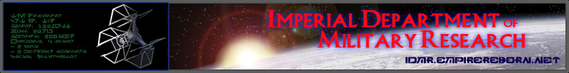

Ye Olde Galactic Empire Mission Editor
So you've decided to create missions for the X-wing series. Well, you've picked the only editor that can read and write missions for X-wing, TIE Fighter, X-wing v TIE Fighter and the Balance of Power expansion, and X-wing Alliance.
This help file contains everything you'll need to make missions that you can be proud of, while also including some features that have been discovered since the original editors were made.
Happy flying

Copyright © 2005- Michael Gaisser
The Galactic Empire: Empire Reborn is Copyright © 2004- Fleet Admiral Tiberius Fel
Certain information Copyright © 1998-2004 Grand Admiral Daemon
"Star Wars" and related items are trademarks of LucasFilm Ltd and LucasArts Entertainment Co. (LA)